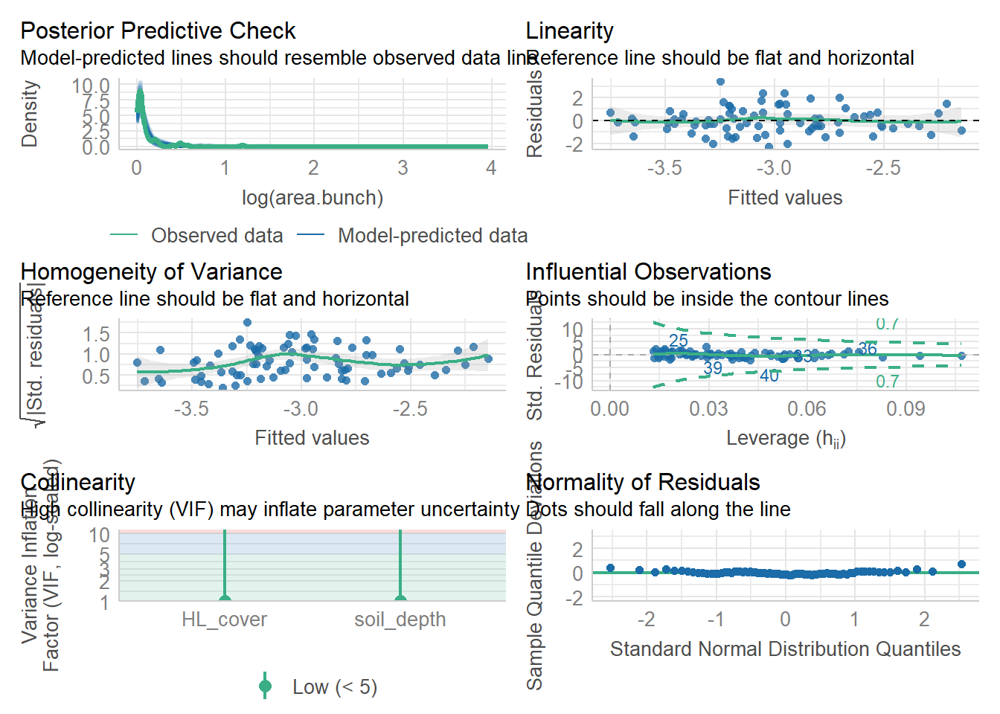
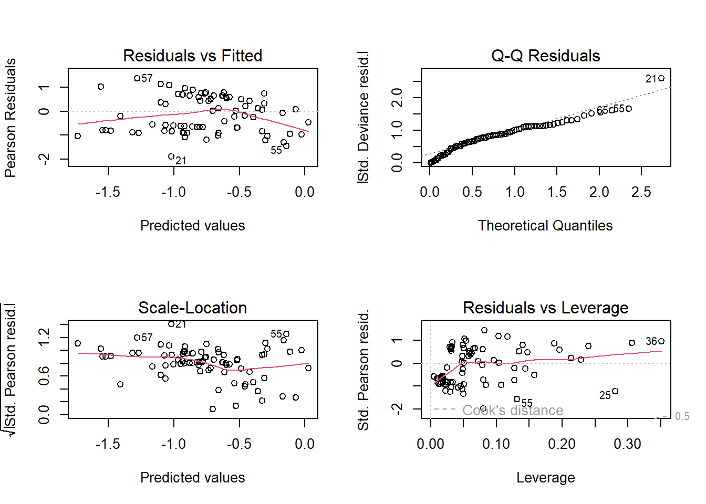
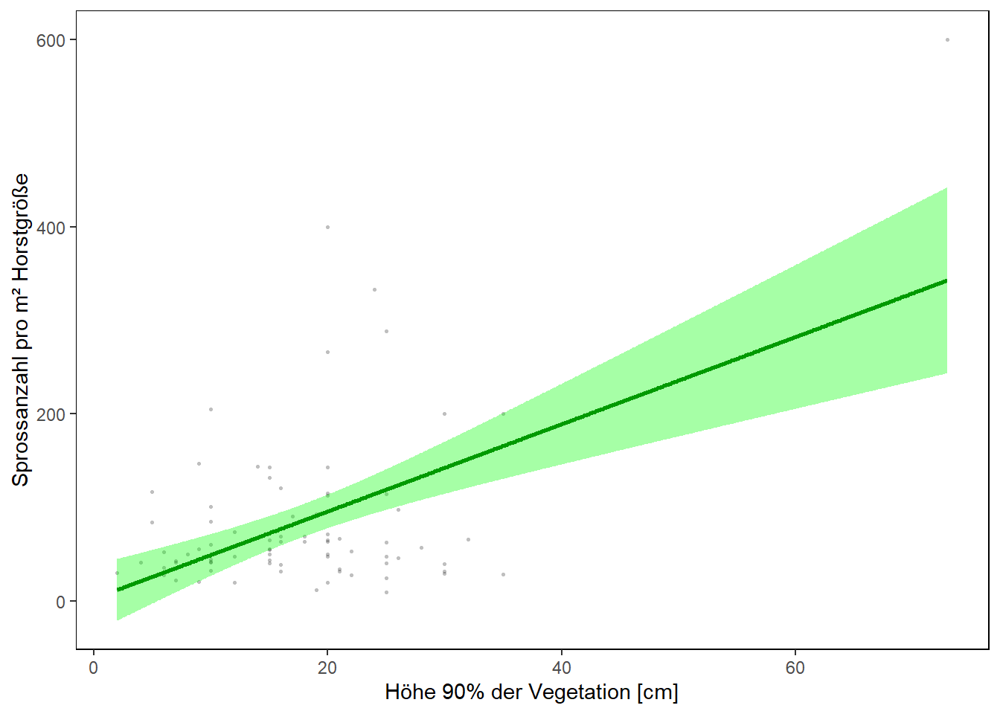
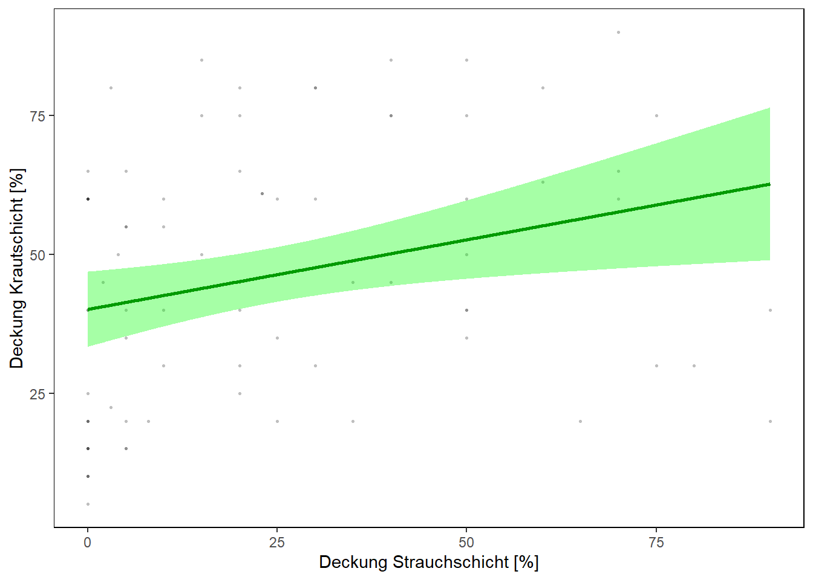
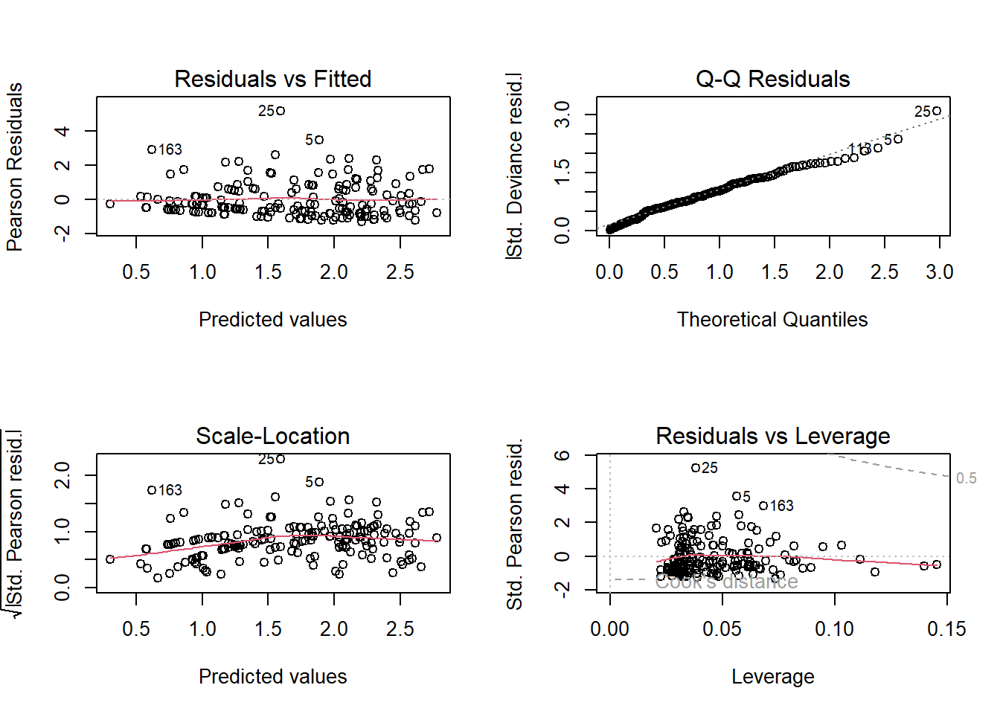

library(openxlsx)
library(MASS)
library(plotrix)
library(agricolae)
library(patchwork)
library(tidyverse)
library(magrittr)
library(performance)
library(corrplot)E11 Cypripedium - Analyse signifikanter Umweltparameter
1. Vorbereitende Schritte
Genutze R-Packages
Selbsterstellte Funktionen
Nutzung mit freundlicher Genehmigung von Markus Bernhardt-Römermann.
invlogit <- function(x) return(round(exp(x) / (1 + exp(x)), 3))
rename.letters <- function(x) {
x$groups <- as.character(x$groups)
if (grepl("a", x$groups[1])) {
new.letters <- x$groups
} else {
which.letters <- unique(strsplit(paste(x$groups, collapse = ""), "")[[1]])
which.letters <- which.letters[order(which.letters)]
tab.translate <- data.frame(orig = unique(strsplit(paste(x$groups, collapse = ""), "")[[1]]), new = NA)
tab.translate$orig <- as.character(tab.translate$orig)
tab.translate$new[1] <- "a"
which.letters <- which.letters[-(which.letters %in% tab.translate$new[1])]
for (j in 2:dim(tab.translate)[1]) { # j=3
if (!(tab.translate[j, "orig"] %in% which.letters)) {
tab.translate[j, "new"] <- which.letters[order(which.letters)][1]
} else {
tab.translate[j, "new"] <- tab.translate[j, "orig"]
}
which.letters <- which.letters[-(which.letters %in% tab.translate$new[j])]
}
new.letters <- rep(NA, dim(x)[1])
for (k in 1:dim(x)[1]) { # k = 1
new.letters[which(x$groups %in% tab.translate$orig[k])] <- tab.translate$new[k]
}
if (any(is.na(new.letters))) {
for (l in which(is.na(new.letters))) { # l=3
multi.letter <- unique(strsplit(paste(x$groups[l], collapse = ""), "")[[1]])
for (m in 1:length(multi.letter)) { # m = 1
multi.letter[m] <- tab.translate$new[which(tab.translate$orig %in% multi.letter[m])]
}
multi.letter <- multi.letter[order(multi.letter)]
new.letters[l] <- paste0(multi.letter, collapse = "")
}
}
}
x$groups <- new.letters
return(x)
}
write_model_table <- function(model.result = NULL, file.name = NULL) {
if (file.name %in% list.files()) {
wb.model.tables <- loadWorkbook(xlsxFile = file.name)
} else {
wb.model.tables <- createWorkbook()
}
dep_var <- names(attributes(summary(model.result)$term)$dataClasses[1])
if (grepl(pattern = "(", dep_var, fixed = TRUE)) {
start.p <- regexpr(pattern = "(", text = dep_var, fixed = TRUE)[1] + 1
if (grepl(pattern = ",", dep_var, fixed = TRUE)) {
end.p <- regexpr(pattern = ",", text = dep_var, fixed = TRUE)[1] - 1
} else {
end.p <- regexpr(pattern = ")", text = dep_var, fixed = TRUE)[1] - 1
}
dep_var <- str_sub(dep_var, start = start.p, end = end.p)
}
coef_table <- as.data.frame(summary(model.result)$coefficients)
coef_table[, 1] <- round(coef_table[, 1], 3)
coef_table[, 2] <- round(coef_table[, 2], 3)
coef_table[, 3] <- round(coef_table[, 3], 3)
coef_table[, 4] <- round(coef_table[, 4], 4)
style_border <- createStyle(border = "TopBottomLeftRight ", borderStyle = "thin", borderColour = "black")
style_header <- createStyle(border = "TopBottomLeftRight", fgFill = "lightgrey")
if (length(names(wb.model.tables) != 0)) {
if (dep_var %in% names(wb.model.tables))
removeWorksheet(wb.model.tables, sheet = dep_var)
}
addWorksheet(wb.model.tables, sheetName = dep_var)
writeData(wb.model.tables, sheet = dep_var, headerStyle = style_header, rowNames = TRUE, x = coef_table)
addStyle(wb.model.tables, sheet = dep_var, style = style_border, rows = 1:(dim(coef_table)[1] + 1), cols = 1:(dim(coef_table)[2] + 1), stack = TRUE, gridExpand = TRUE)
# save table with model results
saveWorkbook(wb.model.tables, file = file.name, overwrite = TRUE)
}Einlesen der Daten von 2019 und 2024
# 2024
ind_data_2024 <- read.xlsx("datalike2019.xlsx", sheet = 1)
str(ind_data_2024)'data.frame': 80 obs. of 26 variables:
$ Labnumber : num 1 2 3 4 5 6 7 8 9 10 ...
$ YourID : chr "WI1" "WI2" "WI3" "WI4" ...
$ Zone.UTM : chr "32U" "32U" "32U" "32U" ...
$ East : num 11.5 11.5 11.5 11.5 11.5 ...
$ North : num 50.9 50.9 50.9 50.9 50.9 ...
$ nb.stem : num 8 8 5 4 23 15 2 8 13 3 ...
$ stem.per.sqm: num 55.1 63.8 31.7 74.1 115 ...
$ area.bunch : num 1452 1254 1575 540 2000 ...
$ nb.flower : num 3 6 4 3 21 11 1 3 9 0 ...
$ prop.flower : num 37.5 75 80 75 91.3 ...
$ stem.height : num 37 34.8 31.9 32.2 34.2 ...
$ l.leaves : num 13.5 12 13.5 12.2 14.6 ...
$ w.leaves : num 10.75 8.25 8.55 7.9 9.25 ...
$ management2 : chr "Wald" "Wald" "Wald" "Wald" ...
$ exposition : num 176 152 133 162 166 184 177 165 178 171 ...
$ slope : num 60 72 59 74 60 57 65 60 68 65 ...
$ soil_depth : num 25 15.7 22.3 15.3 24.3 ...
$ soil_water : num 22.8 25.6 29.4 25.8 31.1 ...
$ PAR : num 21.4 26.8 15.8 21.6 20.1 ...
$ HL_cover : num 40 60 85 63 80 45 80 75 75 20 ...
$ SL_cover : num 20 70 40 60 30 40 3 40 40 90 ...
$ TL_cover : num 20 15 40 40 10 0 0 20 20 20 ...
$ soil_cover : num 5 40 5 30 20 5 10 10 5 20 ...
$ moss_cover : num 90 40 40 30 40 70 80 80 60 40 ...
$ vh.max : num 43 45 77 27 40 50 52 48 46 40 ...
$ vh.90 : num 15 16 21 12 20 20 10 25 21 15 ...# 2019
ind_data_2019 <- read.xlsx("individuals_data.xlsx", sheet = 1)
str(ind_data_2019)'data.frame': 91 obs. of 27 variables:
$ Labnumber : num 60 57 59 56 53 58 55 54 51 52 ...
$ YourID : chr "01F" "02F" "03F" "04F" ...
$ Zone.UTM : chr "32U" "32U" "32U" "32U" ...
$ East : num 677065 677072 677067 677066 677069 ...
$ North : num 5643900 5643904 5643900 5643903 5643909 ...
$ nb.stem : num 19 11 11 14 8 22 3 26 2 6 ...
$ stem.per.sqm: num 43.2 149.7 201.5 40.7 124.2 ...
$ area.bunch : num 4399 735 546 3440 644 ...
$ nb.flower : num 9 11 8 7 8 8 1 0 2 2 ...
$ prop.flower : num 47.4 100 72.7 50 100 ...
$ stem.height : num 46 43.5 43.5 47.5 54 47 47.5 27 55 43.5 ...
$ FvFm : num 0.755 0.77 0.785 0.765 0.745 0.81 0.755 0.78 0.755 0.76 ...
$ PI : num 0.88 0.855 1.69 1.315 0.93 ...
$ SLA : num 35.5 32.2 34.6 28.7 27.9 ...
$ LDMC : num 162 161 163 175 181 ...
$ management : chr "CC" "CC" "CC" "CC" ...
$ management2 : chr "CC" "CC" "CC" "CC" ...
$ exposition : num 169 170 163 167 162 180 175 156 190 173 ...
$ slope : num 35 24 19 28 30 33 25 29 26 25 ...
$ soil_depth : num 14.2 8.2 10.2 13.2 14.3 14.2 14 12.3 11.9 13.3 ...
$ soil_water1 : num 12.6 11.3 18.1 18.8 14.1 20.8 12.8 20.5 11.3 15.1 ...
$ soil_water2 : num 6.83 3.1 7.03 17.2 5.4 ...
$ PAR : num 30 29.2 23.3 30.3 34.4 ...
$ HL_cover : num 70 60 30 80 90 60 30 40 40 50 ...
$ SL_cover : num 0 0 20 0 0 0 0 0 0 0 ...
$ soil_cover : num 0 10 40 10 3 10 0 10 10 5 ...
$ moss_cover : num 30 30 30 10 5 30 70 30 50 40 ...Vorbereitung der Daten
ind_data_2024 <- ind_data_2024 |>
mutate(leaf.area = l.leaves*w.leaves)
ind_data_2024$management2 <- factor(ind_data_2024$management2,
levels = c("Wald", "Hang", "Buche", "Fichte"),
labels = c("Kiefer (n. entb.)", "Kiefer (entb.)", "Buche", "Fichte"))
ind_data_2019$management2 <- factor(ind_data_2019$management2,
levels = c("CC", "5yr", "beech_forest", "spruce_forest"),
labels = c("Kiefer (n. entb.)", "Kiefer (entb.)", "Buche", "Fichte"))
ind_data_2019 <- ind_data_2019 %>%
mutate(soil_water = rowMeans(select(., soil_water1, soil_water2)))
# area.bunch from cm² to m²
ind_data_2024$area.bunch <- ind_data_2024$area.bunch / 10000
ind_data_2019$area.bunch <- ind_data_2019$area.bunch / 100002. Ergebnistabelle(n) und Boxplots
Ergebnistabelle Flächenvergleich
Berechnung der Mittelwerte und Standardfehler.
means <- aggregate(. ~ management2, data = ind_data_2024[, c(6:27)], mean)
se <- aggregate(. ~ management2, data = ind_data_2024[, c(6:27)], std.error)Erstellung der Ergebnistabelle
result.tab <- data.frame(matrix(NA, nrow = 21, ncol = 13))
rownames(result.tab) <- colnames(ind_data_2024[, c(6:13, 15:27)])
colnames(result.tab) <- c("parameter", levels(ind_data_2024$management2), "F.val", "df", "P.val", "Signif", paste0(levels(ind_data_2024$management2), ".letter"))ANOVA und Tukey’s HSD Test
for (i in 1:dim(result.tab)[1]) { # i = 13
temp <- rownames(result.tab)[i]
mean.se <- paste0(format(round(means[, temp], 2), nsmall = 2), "±", format(round(se[, temp], 3), nsmall = 3))
mean.se <- gsub(" ", "", mean.se)
aov1 <- aov(as.formula(paste0(temp, " ~ management2")), data = ind_data_2024)
anova1 <- summary(aov1)
TukeyHSD.letters <- HSD.test(aov1, "management2", group = TRUE)
TukeyHSD.letters <- TukeyHSD.letters$groups
TukeyHSD.letters <- TukeyHSD.letters[order(match(rownames(TukeyHSD.letters), levels(ind_data_2024$management2))),]
TukeyHSD.letters <- rename.letters(TukeyHSD.letters)
TukeyHSD.letters <- as.character(TukeyHSD.letters[, "groups"])
degfr <- paste(anova1[[1]]$Df, collapse = " and ")
fval <- format(round(anova1[[1]]$"F value"[1], 2), nsmall = 2)
pval <- round(anova1[[1]]$"Pr(>F)"[1], digits = 4)
symp <- symnum(pval, corr = FALSE,
cutpoints = c(0, .001,.01,.05, 1),
symbols = c("***","**","*","n.s."))
pval <- format.pval(pval, eps = .001, digits = 2)
res_temp <- c(temp, mean.se, fval, degfr, pval, symp, TukeyHSD.letters)
result.tab[i, ] <- res_temp
}Benennung der Umweltvariablen
result.tab$env.names <- c("Sprossanzahl pro Horst", "Sprossanzahl pro m² Horstgröße", "Horstgröße [m²]", "Anzahl blühender Sprosse", "Anteil blühender Sprosse [%]", "Sprosshöhe [cm]", "Blattlänge [cm]", "Blattbreite [cm]", "Exposition [°]", "Neigung [%]", "Bodentiefe [cm]", "Bodenfeuchte [%]", "Photosynthetisch aktive Strahlung [%]", "Deckung Krautschicht [%]", "Deckung Strauchschicht [%]", "Deckung Baumschicht [%]", "Deckung offener Boden [%]", "Deckung Moosschicht [%]", "Maximale Vegetationshöhe [cm]", "Höhe 90% der Vegetation [cm]","Blattfläche [cm²]")Exportierung der Ergebnistabelle
result.tab parameter Kiefer (n. entb.) Kiefer (entb.) Buche
nb.stem nb.stem 6.30±1.236 7.30±1.548 2.75±0.376
stem.per.sqm stem.per.sqm 61.31±5.130 158.20±34.444 70.20±10.301
area.bunch area.bunch 0.10±0.015 0.18±0.067 0.05±0.010
nb.flower nb.flower 3.85±1.113 2.50±0.826 1.55±0.246
prop.flower prop.flower 53.60±7.671 21.40±6.159 57.50±8.752
stem.height stem.height 28.87±2.043 26.70±2.207 27.70±2.308
l.leaves l.leaves 12.81±0.241 13.19±0.386 12.67±0.395
w.leaves w.leaves 7.77±0.294 7.48±0.351 8.26±0.360
exposition exposition 167.75±2.651 168.13±2.366 309.90±2.215
slope slope 64.60±1.173 53.40±2.102 33.60±1.213
soil_depth soil_depth 18.60±0.945 23.50±1.414 25.52±1.732
soil_water soil_water 29.75±1.227 25.14±1.077 32.95±1.105
PAR PAR 20.66±1.769 31.86±1.905 51.87±4.750
HL_cover HL_cover 60.00±4.767 50.25±3.881 53.50±4.575
SL_cover SL_cover 45.45±6.325 17.25±4.222 27.80±5.297
TL_cover TL_cover 23.80±4.457 38.35±4.862 31.60±6.457
soil_cover soil_cover 13.00±2.819 16.25±3.118 28.40±5.344
moss_cover moss_cover 57.75±5.187 61.75±4.564 24.95±5.388
vh.max vh.max 49.15±2.837 46.90±1.490 66.20±6.756
vh.90 vh.90 18.30±1.603 23.20±2.925 16.70±1.656
leaf.area leaf.area 100.52±5.158 100.90±7.009 105.97±6.617
Fichte F.val df P.val Signif
nb.stem 2.15±0.472 6.10 3 and 76 <0.001 ***
stem.per.sqm 52.65±7.705 6.95 3 and 76 <0.001 ***
area.bunch 0.07±0.029 2.25 3 and 76 0.09 n.s.
nb.flower 1.10±0.340 2.82 3 and 76 0.044 *
prop.flower 48.85±10.633 3.73 3 and 76 0.015 *
stem.height 29.26±2.884 0.24 3 and 76 0.87 n.s.
l.leaves 12.64±0.521 0.41 3 and 76 0.75 n.s.
w.leaves 7.37±0.425 1.22 3 and 76 0.31 n.s.
exposition 163.30±3.403 708.12 3 and 76 <0.001 ***
slope 25.35±2.449 97.38 3 and 76 <0.001 ***
soil_depth 21.92±1.239 4.59 3 and 76 0.0052 **
soil_water 22.57±0.739 19.45 3 and 76 <0.001 ***
PAR 9.37±0.644 44.17 3 and 76 <0.001 ***
HL_cover 20.62±2.264 19.09 3 and 76 <0.001 ***
SL_cover 5.05±1.749 13.18 3 and 76 <0.001 ***
TL_cover 54.50±5.524 5.89 3 and 76 0.0011 **
soil_cover 29.50±6.558 3.15 3 and 76 0.03 *
moss_cover 67.25±6.723 11.91 3 and 76 <0.001 ***
vh.max 40.77±2.282 7.76 3 and 76 <0.001 ***
vh.90 12.90±1.948 4.12 3 and 76 0.0092 **
leaf.area 96.56±8.469 0.31 3 and 76 0.82 n.s.
Kiefer (n. entb.).letter Kiefer (entb.).letter Buche.letter
nb.stem ab a bc
stem.per.sqm a b a
area.bunch a a a
nb.flower a ab ab
prop.flower a b a
stem.height a a a
l.leaves a a a
w.leaves a a a
exposition a a b
slope a b c
soil_depth a ab b
soil_water a b a
PAR a b c
HL_cover a a a
SL_cover a bc b
TL_cover a ab a
soil_cover a a a
moss_cover a a b
vh.max a a b
vh.90 ab a ab
leaf.area a a a
Fichte.letter env.names
nb.stem c Sprossanzahl pro Horst
stem.per.sqm a Sprossanzahl pro m² Horstgröße
area.bunch a Horstgröße [m²]
nb.flower b Anzahl blühender Sprosse
prop.flower ab Anteil blühender Sprosse [%]
stem.height a Sprosshöhe [cm]
l.leaves a Blattlänge [cm]
w.leaves a Blattbreite [cm]
exposition a Exposition [°]
slope d Neigung [%]
soil_depth ab Bodentiefe [cm]
soil_water b Bodenfeuchte [%]
PAR d Photosynthetisch aktive Strahlung [%]
HL_cover b Deckung Krautschicht [%]
SL_cover c Deckung Strauchschicht [%]
TL_cover b Deckung Baumschicht [%]
soil_cover a Deckung offener Boden [%]
moss_cover a Deckung Moosschicht [%]
vh.max a Maximale Vegetationshöhe [cm]
vh.90 b Höhe 90% der Vegetation [cm]
leaf.area a Blattfläche [cm²]write.xlsx(result.tab, "Result Tables/results.diff.2024.xlsx")Boxplots zu Flächenvergleich von Umweltparametern
for (i in 1:dim(result.tab)[1]) { # i = 11
temp.x <- rownames(result.tab)[i]
temp.y <- "management2"
range.y <- range(ind_data_2024[, temp.x], na.rm = TRUE)
plus.temp <- diff(range.y) * 0.1
range.y[1] <- range.y[1] * 0.9
range.y[2] <- range.y[2] * 1.1
max.y <- aggregate(as.formula(paste0(temp.x, " ~ management2")), data = ind_data_2024, FUN = function(X) max(X, na.rm = TRUE))
temp.env.name <- result.tab[i, "env.names"]
p <- ggplot(ind_data_2024, aes_string(x = temp.y, y = temp.x)) +
geom_boxplot(fill = c("forestgreen", "gold", "firebrick", "darkblue")) +
labs(x = "
", y = temp.env.name) +
ylim(range.y) +
geom_text(x = 1, y = max.y[1, 2] + plus.temp, label = result.tab[i, 10]) +
geom_text(x = 2, y = max.y[2, 2] + plus.temp, label = result.tab[i, 11]) +
geom_text(x = 3, y = max.y[3, 2] + plus.temp, label = result.tab[i, 12]) +
geom_text(x = 4, y = max.y[4, 2] + plus.temp, label = result.tab[i, 13]) +
theme(panel.background = element_blank(),
panel.border = element_rect(colour = "black", fill = NA),
axis.title.y = element_text(),
plot.margin = unit(c(0, 0.0, 0.2, 0), "cm"))
file_name <- paste0("Plots/boxplot_", temp.x, "_2024.png")
ggsave(filename = file_name, plot = p, width = 7.4, height = 7.4, units = "cm")
}Warning: `aes_string()` was deprecated in ggplot2 3.0.0.
ℹ Please use tidy evaluation idioms with `aes()`.
ℹ See also `vignette("ggplot2-in-packages")` for more information.3. Ökologische Modellierung 2024
Korrelationsmatrix
subsetcorr <- subset(ind_data_2024, select=c(nb.stem, stem.per.sqm, prop.flower, area.bunch, nb.flower, stem.height, exposition, slope, soil_depth, soil_water, PAR, HL_cover, SL_cover, soil_cover, moss_cover, TL_cover, vh.max, vh.90, l.leaves, w.leaves))
#add leaf area
subsetcorr <- subsetcorr %>%
mutate(leaf.area = w.leaves * l.leaves)
#make matrix
cormatrix <- cor(subsetcorr)
corpvalues <- cor.mtest(subsetcorr)
#matrix with numbers
png("Plots/corrmatrix_numbers_2024.png", width = 25, height = 25, units = "cm", res = 300)
corrplot(cormatrix, p.mat=corpvalues$p, type="upper", method="number")
dev.off()
#matrix with circles
png("Plots/corrmatrix_circle_2024.png", width = 25, height = 25, units = "cm", res = 300)
corrplot(cormatrix, p.mat=corpvalues$p, type="upper", method="circle")
dev.off()corrplot(cormatrix, p.mat=corpvalues$p, type="upper", method="number")
corrplot(cormatrix, p.mat=corpvalues$p, type="upper", method="circle")
Modell zu Sprossanzahl pro Horst (nb.stem)
Erstellen und Simplifikation des Modells. Außerdem Exportieren der Ergebnisse in Excel-Datei.
glm1 <- glm.nb(nb.stem ~ management2 + exposition + slope + soil_depth + soil_water + PAR + HL_cover + SL_cover + TL_cover + soil_cover + moss_cover + vh.max + vh.90, data = ind_data_2024)
summary(glm1)
glm2 <- stepAIC(glm1)
summary(glm2)
glm3 <- update(glm2, .~. -soil_water)
anova(glm2, glm3)
summary(glm3)
model_final <- glm3
write_model_table(model.result = model_final, file.name = "Model.result.tables_2024.xlsx")summary(model_final)
Call:
glm.nb(formula = nb.stem ~ management2 + exposition + HL_cover +
TL_cover, data = ind_data_2024, init.theta = 3.433064531,
link = log)
Deviance Residuals:
Min 1Q Median 3Q Max
-2.1449 -0.8094 -0.2083 0.4618 2.4856
Coefficients:
Estimate Std. Error z value Pr(>|z|)
(Intercept) -1.120490 1.331376 -0.842 0.40001
management2Kiefer (entb.) 0.373457 0.223904 1.668 0.09533 .
management2Buche -2.838777 1.084882 -2.617 0.00888 **
management2Fichte -0.255322 0.330233 -0.773 0.43943
exposition 0.015240 0.007419 2.054 0.03996 *
HL_cover 0.010604 0.004755 2.230 0.02573 *
TL_cover -0.011846 0.003772 -3.140 0.00169 **
---
Signif. codes: 0 '***' 0.001 '**' 0.01 '*' 0.05 '.' 0.1 ' ' 1
(Dispersion parameter for Negative Binomial(3.4331) family taken to be 1)
Null deviance: 128.217 on 79 degrees of freedom
Residual deviance: 70.219 on 73 degrees of freedom
AIC: 386.66
Number of Fisher Scoring iterations: 1
Theta: 3.433
Std. Err.: 0.909
2 x log-likelihood: -370.657 Testen der Modell-Voraussetzungen.
par(mfrow = c(2, 2))
plot(model_final)
par(mfrow = c(1, 1))
check_model(model_final)Cannot simulate residuals for models of class `negbin`. Please try
`check_model(..., residual_type = "normal")` instead.Visualisierungen
Sprosszahl ~ Exposition
plot <- ggplot(ind_data_2024, aes(x = exposition, y = nb.stem)) +
geom_point(colour = "black",
alpha = 0.25,
shape = 16,
size = 0.6) +
geom_smooth(method = "glm", formula= y~x, aes(group=1), color = "darkgreen", fill = "green", linetype = 1) +
labs(x = "Exposition [°]",
y = "Sprossanzahl pro Horst") +
theme(panel.background = element_blank(),
panel.border = element_rect(colour = "black", fill = NA),
legend.position = "none")
plot# Speichern der Bilddatei
ggsave(filename = "Plots/regline_nb.stem~exposition_2024.png", plot = plot, width = 7.4, height = 7.4, units = "cm")Sprosszahl ~ Deckung Krautschicht
plot <- ggplot(ind_data_2024, aes(x = HL_cover, y = nb.stem)) +
geom_point(colour = "black",
alpha = 0.25,
shape = 16,
size = 0.6) +
geom_smooth(method = "glm", formula= y~x, aes(group=1), color = "darkgreen", fill = "green", linetype = 1) +
labs(x = "Deckung Krautschicht [%]",
y = "Sprossanzahl pro Horst") +
theme(panel.background = element_blank(),
panel.border = element_rect(colour = "black", fill = NA),
legend.position = "none")
plot# Speichern der Bilddatei
ggsave(filename = "Plots/regline_nb.stem~HL_cover_2024.png", plot = plot, width = 7.4, height = 7.4, units = "cm")Sprosszahl ~ Deckung Baumschicht
plot <- ggplot(ind_data_2024, aes(x = TL_cover, y = nb.stem)) +
geom_point(colour = "black",
alpha = 0.25,
shape = 16,
size = 0.6) +
geom_smooth(method = "glm", formula= y~x, aes(group=1), color = "darkgreen", fill = "green", linetype = 1) +
labs(x = "Deckung Baumschicht [%]",
y = "Sprossanzahl pro Horst") +
theme(panel.background = element_blank(),
panel.border = element_rect(colour = "black", fill = NA),
legend.position = "none")
plot
# Speichern der Bilddatei
ggsave(filename = "Plots/regline_nb.stem~TL_cover_2024.png", plot = plot, width = 7.4, height = 7.4, units = "cm")Modell zu Horstgröße (area.bunch)
Erstellen und Simplifikation des Modells. Außerdem Exportieren der Ergebnisse in Excel-Datei.
lm1 <- lm(log(area.bunch) ~ management2 + exposition + slope + soil_depth + soil_water + PAR + HL_cover + SL_cover + TL_cover + soil_cover + moss_cover + vh.max + vh.90, data = ind_data_2024)
#plot(lm2)
summary(lm1)
lm2 <- stepAIC(lm1)
summary(lm2)
lm3 <- update(lm2, .~. -TL_cover)
anova(lm2, lm3)
summary(lm3)
lm4 <- update(lm3, .~. -moss_cover)
anova(lm3, lm4)
summary(lm4)
model_final <- lm4
write_model_table(model.result = model_final, file.name = "Model.result.tables_2024.xlsx")summary(model_final)
Call:
lm(formula = log(area.bunch) ~ soil_depth + HL_cover, data = ind_data_2024)
Residuals:
Min 1Q Median 3Q Max
-2.2718 -0.6489 -0.1654 0.6651 3.4218
Coefficients:
Estimate Std. Error t value Pr(>|t|)
(Intercept) -2.664149 0.495133 -5.381 7.74e-07 ***
soil_depth -0.041884 0.019634 -2.133 0.0361 *
HL_cover 0.012596 0.005497 2.291 0.0247 *
---
Signif. codes: 0 '***' 0.001 '**' 0.01 '*' 0.05 '.' 0.1 ' ' 1
Residual standard error: 1.125 on 77 degrees of freedom
Multiple R-squared: 0.1016, Adjusted R-squared: 0.07829
F-statistic: 4.355 on 2 and 77 DF, p-value: 0.01615summary(model_final)
Call:
lm(formula = log(area.bunch) ~ soil_depth + HL_cover, data = ind_data_2024)
Residuals:
Min 1Q Median 3Q Max
-2.2718 -0.6489 -0.1654 0.6651 3.4218
Coefficients:
Estimate Std. Error t value Pr(>|t|)
(Intercept) -2.664149 0.495133 -5.381 7.74e-07 ***
soil_depth -0.041884 0.019634 -2.133 0.0361 *
HL_cover 0.012596 0.005497 2.291 0.0247 *
---
Signif. codes: 0 '***' 0.001 '**' 0.01 '*' 0.05 '.' 0.1 ' ' 1
Residual standard error: 1.125 on 77 degrees of freedom
Multiple R-squared: 0.1016, Adjusted R-squared: 0.07829
F-statistic: 4.355 on 2 and 77 DF, p-value: 0.01615Testen der Modell-Voraussetzungen.
par(mfrow = c(2, 2))
plot(model_final)par(mfrow = c(1, 1))
check_model(model_final)
Visualisierungen
Horstgröße ~ Bodentiefe
plot <- ggplot(ind_data_2024, aes(x = soil_depth, y = log(area.bunch))) +
geom_point(colour = "black",
alpha = 0.25,
shape = 16,
size = 0.6) +
geom_smooth(method = "lm", formula= y~x, aes(group=1), color = "darkgreen", fill = "green", linetype = 1) +
labs(x = "Bodentiefe [cm]",
y = "Horstgröße [m²]") +
theme(panel.background = element_blank(),
panel.border = element_rect(colour = "black", fill = NA),
legend.position = "none")
plot
# Speichern der Bilddatei
ggsave(filename = "Plots/regline_log(area.bunch)~soil_depth_2024.png", plot = plot, width = 7.4, height = 7.4, units = "cm")Horstgröße ~ Deckung Krautschicht
plot <- ggplot(ind_data_2024, aes(x = HL_cover, y = log(area.bunch))) +
geom_point(colour = "black",
alpha = 0.25,
shape = 16,
size = 0.6) +
geom_smooth(method = "lm", formula= y~x, aes(group=1), color = "darkgreen", fill = "green", linetype = 1) +
labs(x = "Deckung Krautschicht [%]",
y = "Horstgröße [m²]") +
theme(panel.background = element_blank(),
panel.border = element_rect(colour = "black", fill = NA),
legend.position = "none")
plot# Speichern der Bilddatei
ggsave(filename = "Plots/regline_log(area.bunch)~HL_cover_2024.png", plot = plot, width = 7.4, height = 7.4, units = "cm")Modell zu Blüherfolg (cbind(nb.flower, nb.stem))
Erstellen und Simplifikation des Modells. Außerdem Exportieren der Ergebnisse in Excel-Datei.
glm1 <- glm(cbind(nb.flower, nb.stem) ~ management2 + exposition + slope + soil_depth + soil_water + PAR + HL_cover + SL_cover + TL_cover + soil_cover + moss_cover + vh.max + vh.90, data = ind_data_2024, family = binomial)
summary(glm1)
glm2 <- stepAIC(glm1)
summary(glm2)
glm3 <- update(glm2, .~. -soil_depth)
anova(glm2, glm3)
summary(glm3)
model_final <- glm3
write_model_table(model.result = model_final, file.name = "Model.result.tables_2024.xlsx")summary(model_final)
Call:
glm(formula = cbind(nb.flower, nb.stem) ~ management2 + soil_water +
HL_cover, family = binomial, data = ind_data_2024)
Deviance Residuals:
Min 1Q Median 3Q Max
-2.4805 -1.0093 -0.2009 0.5678 1.2414
Coefficients:
Estimate Std. Error z value Pr(>|z|)
(Intercept) -0.092329 0.654805 -0.141 0.88787
management2Kiefer (entb.) -0.649906 0.233826 -2.779 0.00545 **
management2Buche 0.180868 0.286321 0.632 0.52758
management2Fichte 0.005277 0.372174 0.014 0.98869
soil_water -0.043477 0.021553 -2.017 0.04367 *
HL_cover 0.014137 0.005412 2.612 0.00899 **
---
Signif. codes: 0 '***' 0.001 '**' 0.01 '*' 0.05 '.' 0.1 ' ' 1
(Dispersion parameter for binomial family taken to be 1)
Null deviance: 78.394 on 79 degrees of freedom
Residual deviance: 61.577 on 74 degrees of freedom
AIC: 196.7
Number of Fisher Scoring iterations: 4Testen der Modell-Voraussetzungen.
par(mfrow = c(2, 2))
plot(model_final)
par(mfrow = c(1, 1))
check_model(model_final)Cannot simulate residuals for models of class `glm`. Please try
`check_model(..., residual_type = "normal")` instead.
Visualisierungen
Blüherfolg ~ Bodenfeuchte
plot <- ggplot(ind_data_2024, aes(x = soil_water, y = prop.flower)) +
geom_point(colour = "black",
alpha = 0.25,
shape = 16,
size = 0.6) +
geom_smooth(method = "lm", formula= y~x, aes(group=1), color = "darkgreen", fill = "green", linetype = 1) +
labs(x = "Bodenfeuchte [%]",
y = "Anteil blühender Sprosse [%]") +
theme(panel.background = element_blank(),
panel.border = element_rect(colour = "black", fill = NA),
legend.position = "none")
plot
# Speichern der Bilddatei
ggsave(filename = "Plots/regline_prop.flower~soil_water_2024.png", plot = plot, width = 7.4, height = 7.4, units = "cm")Blüherfolg ~ Deckung Krautschicht
plot <- ggplot(ind_data_2024, aes(x = HL_cover, y = prop.flower)) +
geom_point(colour = "black",
alpha = 0.25,
shape = 16,
size = 0.6) +
geom_smooth(method = "lm", formula= y~x, aes(group=1), color = "darkgreen", fill = "green", linetype = 1) +
labs(x = "Deckung Krautschicht [%]",
y = "Anteil blühender Sprosse [%]") +
theme(panel.background = element_blank(),
panel.border = element_rect(colour = "black", fill = NA),
legend.position = "none")
plot
# Speichern der Bilddatei
ggsave(filename = "Plots/regline_prop.flower~HL_cover_2024.png", plot = plot, width = 7.4, height = 7.4, units = "cm")Modell zu Sprosshöhe (stem.height)
Erstellen und Simplifikation des Modells. Außerdem Exportieren der Ergebnisse in Excel-Datei.
lm1 <- lm(log(stem.height) ~ management2 + exposition + slope + soil_depth + soil_water + PAR + HL_cover + SL_cover + TL_cover + soil_cover + moss_cover + vh.max + vh.90, data = ind_data_2024)
#plot(lm1)
summary(lm1)
#lm2 <- stepAIC(lm1)
#summary(lm2)
#edit 2024: left out stepAIC to manually test if there is really nothing significant to model
lm2 <- update(lm1, .~. -soil_water)
anova(lm1, lm2)
summary(lm2)
lm3 <- update(lm2, .~. -soil_depth)
anova(lm2, lm3)
summary(lm3)
lm4 <- update(lm3, .~. -management2)
anova(lm4, lm3)
summary(lm4)
lm5 <- update(lm4, .~. -slope)
anova(lm4, lm5)
summary(lm5)
lm6 <- update(lm5, .~. -PAR)
anova(lm5, lm6)
summary(lm6)
lm7 <- update(lm6, .~. -exposition)
anova(lm6, lm7)
summary(lm7)
lm8 <- update(lm7, .~. -HL_cover)
anova(lm7, lm8)
summary(lm8)
lm9 <- update(lm8, .~. -vh.max)
anova(lm8, lm9)
summary(lm9)
lm10 <- update(lm9, .~. -vh.90)
anova(lm9, lm10)
summary(lm10)
lm11 <- update(lm10, .~. -SL_cover)
anova(lm10, lm11)
summary(lm11)
lm12 <- update(lm11, .~. -moss_cover)
anova(lm11, lm12)
summary(lm12)
lm13 <- update(lm12, .~. -TL_cover)
anova(lm12, lm13)
summary(lm13)
model_final <- lm13
write_model_table(model.result = model_final, file.name = "Model.result.tables_2024.xlsx")summary(model_final)
Call:
lm(formula = log(stem.height) ~ soil_cover, data = ind_data_2024)
Residuals:
Min 1Q Median 3Q Max
-1.71033 -0.22416 0.09463 0.34052 0.71761
Coefficients:
Estimate Std. Error t value Pr(>|t|)
(Intercept) 3.331358 0.072592 45.891 <2e-16 ***
soil_cover -0.003864 0.002354 -1.642 0.105
---
Signif. codes: 0 '***' 0.001 '**' 0.01 '*' 0.05 '.' 0.1 ' ' 1
Residual standard error: 0.4596 on 78 degrees of freedom
Multiple R-squared: 0.0334, Adjusted R-squared: 0.02101
F-statistic: 2.695 on 1 and 78 DF, p-value: 0.1047Modell weist keine signifikante Korrelation mit Umweltvariablen auf!
Testen der Modell-Voraussetzungen.
par(mfrow = c(2, 2))
plot(model_final)
par(mfrow = c(1, 1))
check_model(model_final)
Modell zu Sprossanzahl pro m² Horstgröße (stem.per.sqm)
Erstellen und Simplifikation des Modells. Außerdem Exportieren der Ergebnisse in Excel-Datei.
lm1 <- lm(stem.per.sqm ~ management2 + exposition + slope + soil_depth + soil_water + PAR + HL_cover + SL_cover + TL_cover + soil_cover + moss_cover + vh.max + vh.90, data = ind_data_2024)
summary(lm1)
lm2 <- stepAIC(lm1)
summary(lm2)
lm3 <- update(lm2, .~. -PAR)
anova(lm2, lm3)
summary(lm3)
lm4 <- update(lm3, .~. -HL_cover)
anova(lm3, lm4)
summary(lm4)
model_final <- lm4
write_model_table(model.result = model_final, file.name = "Model.result.tables_2024.xlsx")summary(model_final)
Call:
lm(formula = stem.per.sqm ~ management2 + vh.90, data = ind_data_2024)
Residuals:
Min 1Q Median 3Q Max
-154.567 -39.060 -2.531 23.248 254.825
Coefficients:
Estimate Std. Error t value Pr(>|t|)
(Intercept) -7.3966 23.9074 -0.309 0.757886
management2Kiefer (entb.) 78.4965 24.3436 3.225 0.001870 **
management2Buche 14.8977 23.9651 0.622 0.536064
management2Fichte 11.6178 24.4336 0.475 0.635825
vh.90 3.7545 0.9233 4.066 0.000117 ***
---
Signif. codes: 0 '***' 0.001 '**' 0.01 '*' 0.05 '.' 0.1 ' ' 1
Residual standard error: 75.64 on 75 degrees of freedom
Multiple R-squared: 0.357, Adjusted R-squared: 0.3227
F-statistic: 10.41 on 4 and 75 DF, p-value: 9.227e-07Testen der Modell-Voraussetzungen.
par(mfrow = c(2, 2))
plot(model_final)par(mfrow = c(1, 1))
check_model(model_final)Visualisierungen
Sprossanzahl pro m² Horstgröße ~ Höhe 90% der Vegetation
plot <- ggplot(ind_data_2024, aes(x = vh.90, y = stem.per.sqm)) +
geom_point(colour = "black",
alpha = 0.25,
shape = 16,
size = 0.6) +
geom_smooth(method = "lm", formula= y~x, aes(group=1), color = "darkgreen", fill = "green", linetype = 1) +
labs(x = "Höhe 90% der Vegetation [cm]",
y = "Sprossanzahl pro m² Horstgröße") +
theme(panel.background = element_blank(),
panel.border = element_rect(colour = "black", fill = NA),
legend.position = "none")
plot
# Speichern der Bilddatei
ggsave(filename = "Plots/regline_stem.per.sqm~vh.90_2024.png", plot = plot, width = 7.4, height = 7.4, units = "cm")Modell zu Blattfläche (leaf.area)
Erstellen und Simplifikation des Modells. Außerdem Exportieren der Ergebnisse in Excel-Datei.
lm1 <- lm(leaf.area ~ management2 + exposition + slope + soil_depth + soil_water + PAR + HL_cover + SL_cover + TL_cover + soil_cover + moss_cover + vh.max + vh.90, data = ind_data_2024)
summary(lm1)
lm2 <- stepAIC(lm1)
summary(lm2)
lm3 <- update(lm2, .~. -exposition)
anova(lm2, lm3)
summary(lm3)
model_final <- lm3
write_model_table(model.result = model_final, file.name = "Model.result.tables_2024.xlsx")summary(model_final)
Call:
lm(formula = leaf.area ~ soil_cover, data = ind_data_2024)
Residuals:
Min 1Q Median 3Q Max
-72.303 -20.092 2.297 21.706 60.853
Coefficients:
Estimate Std. Error t value Pr(>|t|)
(Intercept) 109.0023 4.6775 23.304 <2e-16 ***
soil_cover -0.3678 0.1516 -2.425 0.0176 *
---
Signif. codes: 0 '***' 0.001 '**' 0.01 '*' 0.05 '.' 0.1 ' ' 1
Residual standard error: 29.61 on 78 degrees of freedom
Multiple R-squared: 0.07011, Adjusted R-squared: 0.05819
F-statistic: 5.881 on 1 and 78 DF, p-value: 0.01762summary(model_final)
Call:
lm(formula = leaf.area ~ soil_cover, data = ind_data_2024)
Residuals:
Min 1Q Median 3Q Max
-72.303 -20.092 2.297 21.706 60.853
Coefficients:
Estimate Std. Error t value Pr(>|t|)
(Intercept) 109.0023 4.6775 23.304 <2e-16 ***
soil_cover -0.3678 0.1516 -2.425 0.0176 *
---
Signif. codes: 0 '***' 0.001 '**' 0.01 '*' 0.05 '.' 0.1 ' ' 1
Residual standard error: 29.61 on 78 degrees of freedom
Multiple R-squared: 0.07011, Adjusted R-squared: 0.05819
F-statistic: 5.881 on 1 and 78 DF, p-value: 0.01762Testen der Modell-Voraussetzungen.
par(mfrow = c(2, 2))
plot(model_final)
par(mfrow = c(1, 1))
check_model(model_final)
Visualisierungen
Blattfläche ~ Deckung offener Boden
plot <- ggplot(ind_data_2024, aes(x = soil_cover, y = leaf.area)) +
geom_point(colour = "black",
alpha = 0.25,
shape = 16,
size = 0.6) +
geom_smooth(method = "lm", formula= y~x, aes(group=1), color = "darkgreen", fill = "green", linetype = 1) +
labs(x = "Deckung offener Boden [%]",
y = "Blattfläche [cm²]") +
theme(panel.background = element_blank(),
panel.border = element_rect(colour = "black", fill = NA),
legend.position = "none")
plot
# Speichern der Bilddatei
ggsave(filename = "Plots/regline_leaf.area~soil_cover_2024.png", plot = plot, width = 7.4, height = 7.4, units = "cm")Modell zu Deckung Krautschicht (HL_cover)
Erstellen und Simplifikation des Modells. Außerdem Exportieren der Ergebnisse in Excel-Datei.
lm1 <- lm(HL_cover ~ management2 + exposition + slope + soil_depth + soil_water + PAR + SL_cover + TL_cover + soil_cover + moss_cover + vh.max + vh.90, data = ind_data_2024)
summary(lm1)
lm2 <- stepAIC(lm1)
summary(lm2)
lm3 <- update(lm2, .~. -vh.max)
anova(lm2, lm3)
summary(lm3)
model_final <- lm3
write_model_table(model.result = model_final, file.name = "Model.result.tables_2024.xlsx")summary(model_final)
Call:
lm(formula = HL_cover ~ management2 + SL_cover + soil_cover +
moss_cover, data = ind_data_2024)
Residuals:
Min 1Q Median 3Q Max
-32.193 -10.497 1.817 11.529 33.159
Coefficients:
Estimate Std. Error t value Pr(>|t|)
(Intercept) 90.76683 9.30330 9.756 7.21e-15 ***
management2Kiefer (entb.) -12.61287 5.58755 -2.257 0.0270 *
management2Buche -9.47061 5.77094 -1.641 0.1051
management2Fichte -35.86095 6.39038 -5.612 3.40e-07 ***
SL_cover -0.20160 0.08978 -2.245 0.0278 *
soil_cover -0.56435 0.12036 -4.689 1.25e-05 ***
moss_cover -0.24705 0.09990 -2.473 0.0157 *
---
Signif. codes: 0 '***' 0.001 '**' 0.01 '*' 0.05 '.' 0.1 ' ' 1
Residual standard error: 15.84 on 73 degrees of freedom
Multiple R-squared: 0.5696, Adjusted R-squared: 0.5343
F-statistic: 16.1 on 6 and 73 DF, p-value: 1.051e-11Testen der Modell-Voraussetzungen.
par(mfrow = c(2, 2))
plot(model_final)
par(mfrow = c(1, 1))
check_model(model_final)
Visualisierungen
Deckung Krautschicht ~ Deckung Strauchschicht
plot <- ggplot(ind_data_2024, aes(x = SL_cover, y = HL_cover)) +
geom_point(colour = "black",
alpha = 0.25,
shape = 16,
size = 0.6) +
geom_smooth(method = "lm", formula= y~x, aes(group=1), color = "darkgreen", fill = "green", linetype = 1) +
labs(x = "Deckung Strauchschicht [%]",
y = "Deckung Krautschicht [%]") +
theme(panel.background = element_blank(),
panel.border = element_rect(colour = "black", fill = NA),
legend.position = "none")
plot
# Speichern der Bilddatei
ggsave(filename = "Plots/regline_HL_cover~SL_cover_2024.png", plot = plot, width = 7.4, height = 7.4, units = "cm")Deckung Krautschicht ~ Deckung offener Boden
plot <- ggplot(ind_data_2024, aes(x = soil_cover, y = HL_cover)) +
geom_point(colour = "black",
alpha = 0.25,
shape = 16,
size = 0.6) +
geom_smooth(method = "lm", formula= y~x, aes(group=1), color = "darkgreen", fill = "green", linetype = 1) +
labs(x = "Deckung offener Boden [%]",
y = "Deckung Krautschicht [%]") +
theme(panel.background = element_blank(),
panel.border = element_rect(colour = "black", fill = NA),
legend.position = "none")
plot
# Speichern der Bilddatei
ggsave(filename = "Plots/regline_HL_cover~soil_cover_2024.png", plot = plot, width = 7.4, height = 7.4, units = "cm")Deckung Krautschicht ~ Deckung Moosschicht
plot <- ggplot(ind_data_2024, aes(x = moss_cover, y = HL_cover)) +
geom_point(colour = "black",
alpha = 0.25,
shape = 16,
size = 0.6) +
geom_smooth(method = "lm", formula= y~x, aes(group=1), color = "darkgreen", fill = "green", linetype = 1) +
labs(x = "Deckung Moosschicht [%]",
y = "Deckung Krautschicht [%]") +
theme(panel.background = element_blank(),
panel.border = element_rect(colour = "black", fill = NA),
legend.position = "none")
plot
# Speichern der Bilddatei
ggsave(filename = "Plots/regline_HL_cover~moss_cover_2024.png", plot = plot, width = 7.4, height = 7.4, units = "cm")Verschieben der Modell-Ergebnistabelle
Direktes Abspeichern nach jedem Modell im Ordner führte zu Problemen. Daher nachträgliches Verschieben in den vorgesehenen Ordner.
file.rename("Model.result.tables_2024.xlsx", "Result Tables/Model.result.tables_2024.xlsx")[1] TRUE4. Ökologische Modellierung 2019 + 2024
Zusammenführen von Daten
ind_data_2024$year <- 2024
ind_data_2019$year <- 2019
common_columns <- intersect(names(ind_data_2024), names(ind_data_2019))
ind_data_2024_common <- ind_data_2024[, c(common_columns, "year")]
ind_data_2019_common <- ind_data_2019[, c(common_columns, "year")]
names(ind_data_2024_common) <- common_columns
names(ind_data_2019_common) <- common_columns
ind_data_merged <- rbind(ind_data_2024_common, ind_data_2019_common)Korrelationsmatrix
str(ind_data_merged)
subsetcorr <- subset(ind_data_merged, select=c(nb.stem, stem.per.sqm, prop.flower, area.bunch, nb.flower, stem.height, exposition, slope, soil_water, PAR, HL_cover, SL_cover, soil_cover, moss_cover))
#make matrix
cormatrix <- cor(subsetcorr)
corpvalues <- cor.mtest(subsetcorr)
#matrix with numbers
png("Plots/corrmatrix_numbers_merged.png", width = 25, height = 25, units = "cm", res = 300)
corrplot(cormatrix, p.mat=corpvalues$p, type="upper", method="number")
dev.off()
#matrix with circles
png("Plots/corrmatrix_circle_merged.png", width = 25, height = 25, units = "cm", res = 300)
corrplot(cormatrix, p.mat=corpvalues$p, type="upper", method="circle")
dev.off()corrplot(cormatrix, p.mat=corpvalues$p, type="upper", method="number")
corrplot(cormatrix, p.mat=corpvalues$p, type="upper", method="circle")
Modell zu Sprosszahl pro Horst (nb.stem)
Erstellen und Simplifikation des Modells. Außerdem Exportieren der Ergebnisse in Excel-Datei.
glm1 <- glm.nb(nb.stem ~ management2 + exposition + slope + soil_depth + soil_water + PAR + HL_cover + SL_cover + soil_cover + moss_cover, data = ind_data_merged)
summary(glm1)
glm2 <- stepAIC(glm1)
summary(glm2)
model_final <- glm2
write_model_table(model.result = model_final, file.name = "Model.result.tables_merged.xlsx")summary(model_final)
Call:
glm.nb(formula = nb.stem ~ management2 + soil_depth + PAR + HL_cover +
soil_cover, data = ind_data_merged, init.theta = 2.74491993,
link = log)
Deviance Residuals:
Min 1Q Median 3Q Max
-2.0508 -0.8673 -0.3303 0.5175 3.0359
Coefficients:
Estimate Std. Error z value Pr(>|z|)
(Intercept) 2.294495 0.279576 8.207 2.27e-16 ***
management2Kiefer (entb.) -0.181741 0.144879 -1.254 0.209684
management2Buche -0.804246 0.209838 -3.833 0.000127 ***
management2Fichte -0.454714 0.217364 -2.092 0.036443 *
soil_depth -0.040801 0.010301 -3.961 7.47e-05 ***
PAR 0.009686 0.004938 1.961 0.049824 *
HL_cover 0.006566 0.003208 2.047 0.040694 *
soil_cover -0.006735 0.003126 -2.155 0.031187 *
---
Signif. codes: 0 '***' 0.001 '**' 0.01 '*' 0.05 '.' 0.1 ' ' 1
(Dispersion parameter for Negative Binomial(2.7449) family taken to be 1)
Null deviance: 263.26 on 170 degrees of freedom
Residual deviance: 163.19 on 163 degrees of freedom
AIC: 922.67
Number of Fisher Scoring iterations: 1
Theta: 2.745
Std. Err.: 0.426
2 x log-likelihood: -904.672 Testen der Modell-Voraussetzungen.
par(mfrow = c(2, 2))
plot(model_final)
par(mfrow = c(1, 1))
check_model(model_final)Cannot simulate residuals for models of class `negbin`. Please try
`check_model(..., residual_type = "normal")` instead.
Visualisierungen
Sprosszahl pro Horst ~ Bodentiefe
plot <- ggplot(ind_data_merged, aes(x = soil_depth, y = nb.stem)) +
geom_point(colour = "black",
alpha = 0.25,
shape = 16,
size = 0.6) +
geom_smooth(method = "glm", formula= y~x, aes(group=1), color = "darkgreen", fill = "green", linetype = 1) +
labs(x = "Bodentiefe [cm]",
y = "Sprossanzahl pro Horst") +
theme(panel.background = element_blank(),
panel.border = element_rect(colour = "black", fill = NA),
legend.position = "none")
plot
# Speichern der Bilddatei
ggsave(filename = "Plots/regline_nb.stem~soil_depth_merged.png", plot = plot, width = 7.4, height = 7.4, units = "cm")Sprosszahl pro Horst ~ Photosynthetisch aktive Strahlung
plot <- ggplot(ind_data_merged, aes(x = PAR, y = nb.stem)) +
geom_point(colour = "black",
alpha = 0.25,
shape = 16,
size = 0.6) +
geom_smooth(method = "glm", formula= y~x, aes(group=1), color = "darkgreen", fill = "green", linetype = 1) +
labs(x = "Photosynthetisch aktive Strahlung [%]",
y = "Sprossanzahl pro Horst") +
theme(panel.background = element_blank(),
panel.border = element_rect(colour = "black", fill = NA),
legend.position = "none")
plot
# Speichern der Bilddatei
ggsave(filename = "Plots/regline_nb.stem~PAR_merged.png", plot = plot, width = 7.4, height = 7.4, units = "cm")Sprosszahl pro Horst ~ Deckung Krautschicht
plot <- ggplot(ind_data_merged, aes(x = HL_cover, y = nb.stem)) +
geom_point(colour = "black",
alpha = 0.25,
shape = 16,
size = 0.6) +
geom_smooth(method = "glm", formula= y~x, aes(group=1), color = "darkgreen", fill = "green", linetype = 1) +
labs(x = "Deckung Krautschicht [%]",
y = "Sprossanzahl pro Horst") +
theme(panel.background = element_blank(),
panel.border = element_rect(colour = "black", fill = NA),
legend.position = "none")
plot
# Speichern der Bilddatei
ggsave(filename = "Plots/regline_nb.stem~HL_cover_merged.png", plot = plot, width = 7.4, height = 7.4, units = "cm")Sprosszahl pro Horst ~ Deckung offener Boden
plot <- ggplot(ind_data_merged, aes(x = soil_cover, y = nb.stem)) +
geom_point(colour = "black",
alpha = 0.25,
shape = 16,
size = 0.6) +
geom_smooth(method = "glm", formula= y~x, aes(group=1), color = "darkgreen", fill = "green", linetype = 1) +
labs(x = "Deckung offener Boden [%]",
y = "Sprossanzahl pro Horst") +
theme(panel.background = element_blank(),
panel.border = element_rect(colour = "black", fill = NA),
legend.position = "none")
plot
# Speichern der Bilddatei
ggsave(filename = "Plots/regline_nb.stem~soil_cover_merged.png", plot = plot, width = 7.4, height = 7.4, units = "cm")Modell zu Blüherfolg (cbind(nb.flower, nb.stem))
Erstellen und Simplifikation des Modells. Außerdem Exportieren der Ergebnisse in Excel-Datei.
glm1 <- glm(cbind(nb.flower, nb.stem) ~ management2 + exposition + slope + soil_depth + soil_water + PAR + HL_cover + SL_cover + soil_cover + moss_cover, data = ind_data_merged, family = binomial)
summary(glm1)
glm2 <- stepAIC(glm1)
summary(glm2)
glm3 <- update(glm2, .~. -PAR)
anova(glm2, glm3)
summary(glm3)
glm4 <- update(glm3, .~. -soil_cover)
anova(glm3, glm4)
summary(glm4)
model_final <- glm4
write_model_table(model.result = model_final, file.name = "Model.result.tables_merged.xlsx")summary(model_final)
Call:
glm(formula = cbind(nb.flower, nb.stem) ~ soil_depth + HL_cover,
family = binomial, data = ind_data_merged)
Deviance Residuals:
Min 1Q Median 3Q Max
-4.6507 -0.9339 -0.1058 0.5700 2.4437
Coefficients:
Estimate Std. Error z value Pr(>|z|)
(Intercept) -0.64135 0.21172 -3.029 0.002452 **
soil_depth -0.02747 0.01001 -2.745 0.006053 **
HL_cover 0.00793 0.00239 3.318 0.000906 ***
---
Signif. codes: 0 '***' 0.001 '**' 0.01 '*' 0.05 '.' 0.1 ' ' 1
(Dispersion parameter for binomial family taken to be 1)
Null deviance: 238.68 on 170 degrees of freedom
Residual deviance: 219.47 on 168 degrees of freedom
AIC: 532.86
Number of Fisher Scoring iterations: 4Testen der Modell-Voraussetzungen.
par(mfrow = c(2, 2))
plot(model_final)
par(mfrow = c(1, 1))
check_model(model_final)Cannot simulate residuals for models of class `glm`. Please try
`check_model(..., residual_type = "normal")` instead.
Visualisierungen
Blüherfolg ~ Bodentiefe
plot <- ggplot(ind_data_merged, aes(x = soil_depth, y = prop.flower)) +
geom_point(colour = "black",
alpha = 0.25,
shape = 16,
size = 0.6) +
geom_smooth(method = "lm", formula= y~x, aes(group=1), color = "darkgreen", fill = "green", linetype = 1) +
labs(x = "Bodentiefe [cm]",
y = "Anteil blühender Sprosse [%]") +
theme(panel.background = element_blank(),
panel.border = element_rect(colour = "black", fill = NA),
legend.position = "none")
plot
# Speichern der Bilddatei
ggsave(filename = "Plots/regline_prop.flower~soil_depth_merged.png", plot = plot, width = 7.4, height = 7.4, units = "cm")Blüherfolg ~ Deckung Krautschicht
plot <- ggplot(ind_data_merged, aes(x = HL_cover, y = prop.flower)) +
geom_point(colour = "black",
alpha = 0.25,
shape = 16,
size = 0.6) +
geom_smooth(method = "lm", formula= y~x, aes(group=1), color = "darkgreen", fill = "green", linetype = 1) +
labs(x = "Deckung Krautschicht [%]",
y = "Anteil blühender Sprosse [%]") +
theme(panel.background = element_blank(),
panel.border = element_rect(colour = "black", fill = NA),
legend.position = "none")
plot
# Speichern der Bilddatei
ggsave(filename = "Plots/regline_prop.flower~HL_cover_merged.png", plot = plot, width = 7.4, height = 7.4, units = "cm")Modell zu Sprossanzahl pro m² Horstgröße (stem.per.sqm)
Erstellen und Simplifikation des Modells. Außerdem Exportieren der Ergebnisse in Excel-Datei.
lm1 <- lm(stem.per.sqm ~ management2 + exposition + slope + soil_depth + soil_water + PAR + HL_cover + SL_cover + soil_cover + moss_cover, data = ind_data_merged)
summary(lm1)
lm2 <- stepAIC(lm1)
summary(lm2)
lm3 <- update(lm2, .~. -slope)
anova(lm2, lm3)
summary(lm3)
model_final <- lm3
write_model_table(model.result = model_final, file.name = "Model.result.tables_merged.xlsx")summary(model_final)
Call:
lm(formula = stem.per.sqm ~ management2 + soil_water, data = ind_data_merged)
Residuals:
Min 1Q Median 3Q Max
-227.66 -85.20 -20.32 38.82 604.14
Coefficients:
Estimate Std. Error t value Pr(>|t|)
(Intercept) 284.980 32.624 8.735 2.53e-15 ***
management2Kiefer (entb.) 26.447 28.928 0.914 0.3619
management2Buche 26.350 34.933 0.754 0.4517
management2Fichte -66.359 30.472 -2.178 0.0308 *
soil_water -6.529 1.334 -4.892 2.34e-06 ***
---
Signif. codes: 0 '***' 0.001 '**' 0.01 '*' 0.05 '.' 0.1 ' ' 1
Residual standard error: 143.9 on 166 degrees of freedom
Multiple R-squared: 0.1699, Adjusted R-squared: 0.1499
F-statistic: 8.491 on 4 and 166 DF, p-value: 2.942e-06Testen der Modell-Voraussetzungen.
par(mfrow = c(2, 2))
plot(model_final)
par(mfrow = c(1, 1))
check_model(model_final)Visualisierungen
Sprossanzahl pro m² Horstgröße ~ Bodenfeuchte
plot <- ggplot(ind_data_merged, aes(x = soil_water, y = stem.per.sqm)) +
geom_point(colour = "black",
alpha = 0.25,
shape = 16,
size = 0.6) +
geom_smooth(method = "lm", formula= y~x, aes(group=1), color = "darkgreen", fill = "green", linetype = 1) +
labs(x = "Bodenfeuchte [%]",
y = "Sprossanzahl pro m² Horstgröße") +
theme(panel.background = element_blank(),
panel.border = element_rect(colour = "black", fill = NA),
legend.position = "none")
plot# Speichern der Bilddatei
ggsave(filename = "Plots/regline_stem.per.sqm~soil_water_merged.png", plot = plot, width = 7.4, height = 7.4, units = "cm")Modell zu Deckung Krautschicht (HL_cover)
Erstellen und Simplifikation des Modells. Außerdem Exportieren der Ergebnisse in Excel-Datei.
lm1 <- lm(HL_cover ~ management2 + exposition + slope + soil_depth + soil_water + PAR + SL_cover + soil_cover + moss_cover, data = ind_data_merged)
summary(lm1)
lm2 <- stepAIC(lm1)
summary(lm2)
model_final <- lm2
write_model_table(model.result = model_final, file.name = "Model.result.tables_merged.xlsx")summary(model_final)
Call:
lm(formula = HL_cover ~ slope + PAR + soil_cover + moss_cover,
data = ind_data_merged)
Residuals:
Min 1Q Median 3Q Max
-48.896 -9.758 0.702 12.382 39.135
Coefficients:
Estimate Std. Error t value Pr(>|t|)
(Intercept) 54.50930 4.84252 11.256 < 2e-16 ***
slope 0.42169 0.07799 5.407 2.20e-07 ***
PAR 0.22613 0.09013 2.509 0.0131 *
soil_cover -0.59437 0.07066 -8.411 1.78e-14 ***
moss_cover -0.37585 0.05829 -6.448 1.19e-09 ***
---
Signif. codes: 0 '***' 0.001 '**' 0.01 '*' 0.05 '.' 0.1 ' ' 1
Residual standard error: 17.02 on 166 degrees of freedom
Multiple R-squared: 0.4594, Adjusted R-squared: 0.4464
F-statistic: 35.26 on 4 and 166 DF, p-value: < 2.2e-16Testen der Modell-Voraussetzungen.
par(mfrow = c(2, 2))
plot(model_final)
par(mfrow = c(1, 1))
check_model(model_final)
Visualisierungen
Deckung Krautschicht ~ Deckung Strauchschicht
plot <- ggplot(ind_data_merged, aes(x = slope, y = HL_cover)) +
geom_point(colour = "black",
alpha = 0.25,
shape = 16,
size = 0.6) +
geom_smooth(method = "lm", formula= y~x, aes(group=1), color = "darkgreen", fill = "green", linetype = 1) +
labs(x = "Deckung Strauchschicht [%]",
y = "Deckung Krautschicht [%]") +
theme(panel.background = element_blank(),
panel.border = element_rect(colour = "black", fill = NA),
legend.position = "none")
plot
# Speichern der Bilddatei
ggsave(filename = "Plots/regline_HL_cover~slope_merged.png", plot = plot, width = 7.4, height = 7.4, units = "cm")Deckung Krautschicht ~ Photosynthetisch aktive Strahlung
plot <- ggplot(ind_data_merged, aes(x = PAR, y = HL_cover)) +
geom_point(colour = "black",
alpha = 0.25,
shape = 16,
size = 0.6) +
geom_smooth(method = "lm", formula= y~x, aes(group=1), color = "darkgreen", fill = "green", linetype = 1) +
labs(x = "Photosynthetisch aktive Strahlung [%]",
y = "Deckung Krautschicht [%]") +
theme(panel.background = element_blank(),
panel.border = element_rect(colour = "black", fill = NA),
legend.position = "none")
plot
# Speichern der Bilddatei
ggsave(filename = "Plots/regline_HL_cover~PAR_merged.png", plot = plot, width = 7.4, height = 7.4, units = "cm")Deckung Krautschicht ~ Deckung offener Boden
plot <- ggplot(ind_data_merged, aes(x = soil_cover, y = HL_cover)) +
geom_point(colour = "black",
alpha = 0.25,
shape = 16,
size = 0.6) +
geom_smooth(method = "lm", formula= y~x, aes(group=1), color = "darkgreen", fill = "green", linetype = 1) +
labs(x = "Deckung offener Boden [%]",
y = "Deckung Krautschicht [%]") +
theme(panel.background = element_blank(),
panel.border = element_rect(colour = "black", fill = NA),
legend.position = "none")
plot# Speichern der Bilddatei
ggsave(filename = "Plots/regline_HL_cover~soil_cover_merged.png", plot = plot, width = 7.4, height = 7.4, units = "cm")Deckung Krautschicht ~ Deckung Moosschicht
plot <- ggplot(ind_data_merged, aes(x = moss_cover, y = HL_cover)) +
geom_point(colour = "black",
alpha = 0.25,
shape = 16,
size = 0.6) +
geom_smooth(method = "lm", formula= y~x, aes(group=1), color = "darkgreen", fill = "green", linetype = 1) +
labs(x = "Deckung Moosschicht [%]",
y = "Deckung Krautschicht [%]") +
theme(panel.background = element_blank(),
panel.border = element_rect(colour = "black", fill = NA),
legend.position = "none")
plot# Speichern der Bilddatei
ggsave(filename = "Plots/regline_HL_cover~moss_cover_merged.png", plot = plot, width = 7.4, height = 7.4, units = "cm")Verschieben der Modell-Ergebnistabelle
Direktes Abspeichern nach jedem Modell im Ordner führte zu Problemen. Daher nachträgliches Verschieben in den vorgesehenen Ordner.
file.rename("Model.result.tables_merged.xlsx", "Result Tables/Model.result.tables_merged.xlsx")[1] TRUE